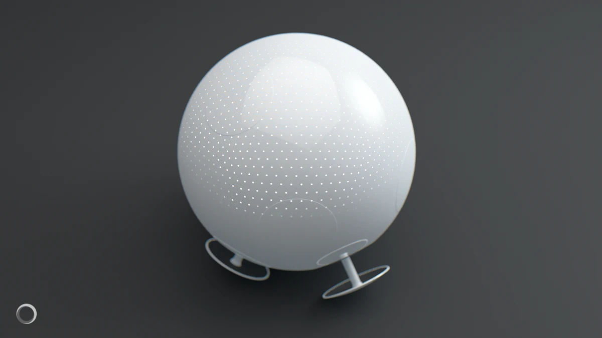
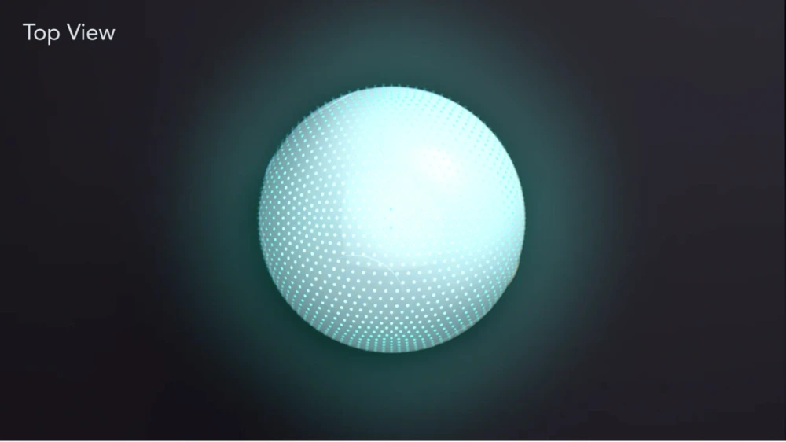
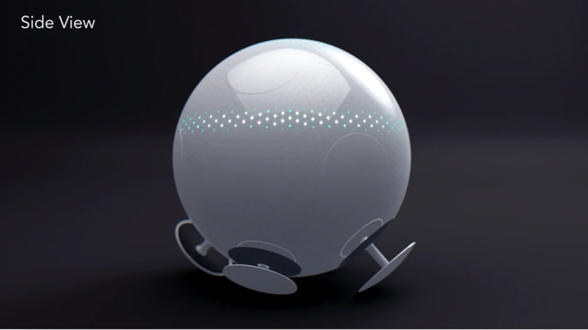

Orbi

An assistant in the room
In 2016 I designed Orbi as a body for an AI. I imagined a personal assistant that could come over when you called, or roll into the next room to check on the house while you were away. That led me to a sphere. It could move in any direction, and any side could turn toward you.
Saying hello with light
The lighting was my favorite part. I wanted someone across the room to know when Orbi had noticed them. A few pixels under the shell could spell out a greeting, blink, or curl into a smile. Up close, the same panel that pressed against the floor could feel the weight of a hand.


Inside the sphere
Fourteen panels had to fit flush against one curved skin. Behind each one, two coiled chains zip together into a rigid column that can push against the floor. The chains wind back into the body as the panel retracts. Between the actuators, twelve smaller openings in the frame make room for sound and range sensors. The battery, computer, and orientation sensor share the center.
Choose Exploded to pull the layers apart, or Drive to see how a sequence of pushes moves the whole sphere.